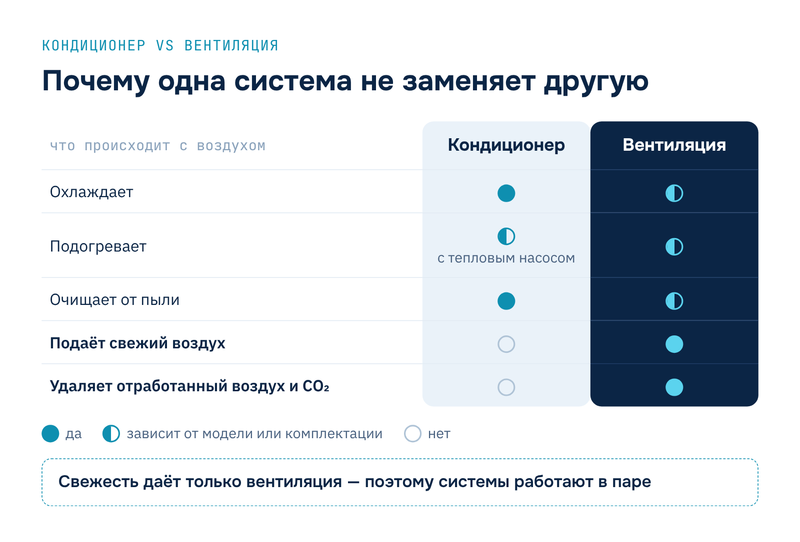
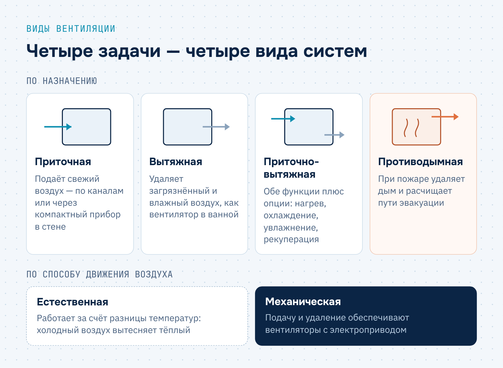
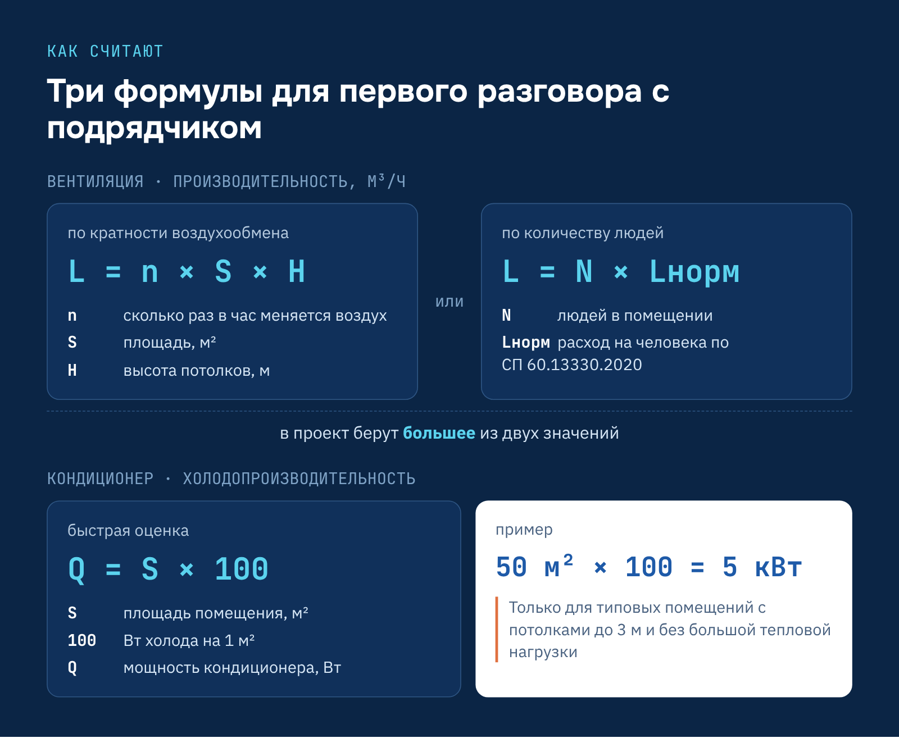
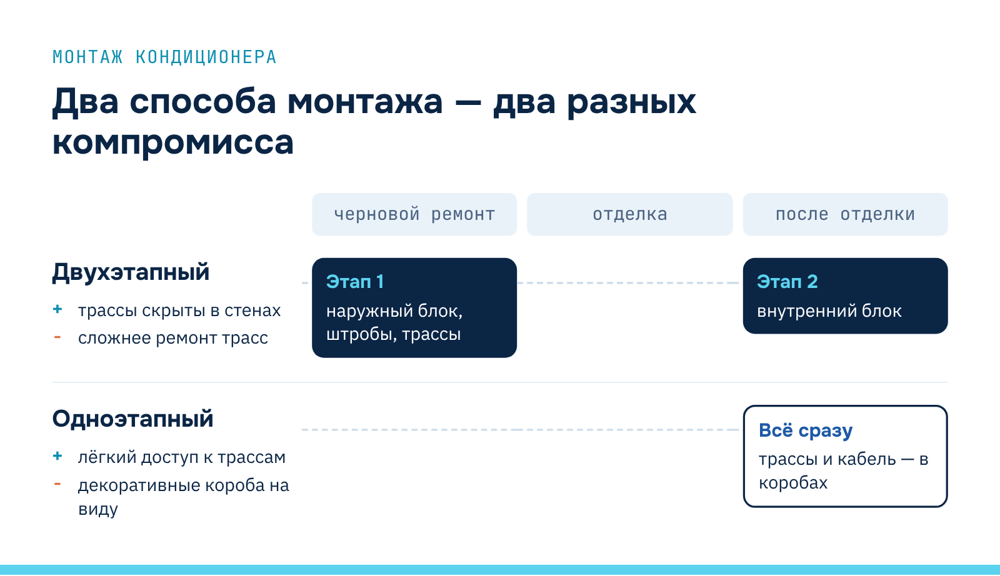

Qwent · Статья для Дзена
Статья для Яндекс Дзена: вентиляция и кондиционирование коммерческих помещений
О заказчикеQwent — инженерная компания из Москвы (сайт ceds.ru): монтаж и обслуживание систем вентиляции и кондиционирования.
Задача
Написать статью для канала компании в Яндекс Дзене о вентиляции и кондиционировании коммерческих помещений: развеять миф, что кондиционер заменяет вентиляцию, объяснить пользу проекта, базовые расчеты и ориентиры по стоимости, помочь выбрать надежного подрядчика.
Решение
Подала тему в разговорном, но деловом тоне Дзена: от бытовой ситуации «окна закрыты — душно» к сравнению функций кондиционера и вентиляции, видам систем, формулам расчета производительности и мощности, вариантам кондиционеров и способам монтажа. Добавила примерные цены «под ключ» для трех типов объектов, признаки надежного и ненадежного подрядчика и ссылки на гайды компании.
Результат
Популярная статья, которая закрывает основные вопросы владельца помещения до обращения к подрядчику и ведет к материалам и контактам компании.
Системы вентиляции и кондиционирования для коммерческих помещений
От качества воздуха в офисе, магазине или доме напрямую зависят самочувствие и работоспособность людей. Кондиционеры давно стали привычной техникой, а вот роль вентиляции многие до сих пор недооценивают.
Почему важна именно связка «вентиляция + кондиционирование» и может ли одна система заменить другую? Как выбирать оборудование и зачем нужен проект? Кому из подрядчиков можно доверять, а с кем лучше не работать? Отвечаем по порядку.
Зачем нужны вентиляция и кондиционирование
На вопрос, зачем нужен кондиционер, ответит даже ребенок: чтобы летом не страдать от жары. С вентиляцией все не так очевидно, и владельцы коммерческих и производственных помещений часто недооценивают ее значение. Между тем от работы вентсистемы зависят продуктивность сотрудников и качество технологических процессов.
Почему открытое окно не решает проблему
Главное требование к воздухообмену — регулярно подавать в помещение свежий воздух. И здесь начинаются сложности. Летом окна распахнуты, а в помещении все равно душно. Или окна закрыты, потому что работает кондиционер. Зимой не откроешь — холодно.
Итог знаком многим: духота, снижение концентрации из-за избытка CO₂, общее недомогание, сквозняки и простуды.
Кондиционер не заменяет вентиляцию
Почему мы страдаем от плохого воздуха в помещениях? Причин две: мы недооцениваем вентиляцию и переоцениваем возможности кондиционера, считая, что одно может заменить другое. Не может. Разберемся, как работают эти системы:
- Кондиционер работает с тем воздухом, который уже есть в комнате. Он охлаждает его, осушает, задерживает пыль своим фильтром, а в моделях с тепловым насосом — еще и подогревает. Но свежего воздуха не добавляет: уровень CO₂ в помещении от его работы не снижается.
- Вентиляция организует воздухообмен. Это ее основное назначение: подавать в помещение свежий воздух и удалять отработанный. Механическая приточная установка, в зависимости от комплектации, может предварительно охлаждать, подогревать и очищать воздух.
Вывод простой: оптимальный микроклимат возможен только при совместной работе вентиляции и кондиционирования. Эти системы не заменяют, а дополняют друг друга.

Поэтому в офисе, где весь день работают люди, кондиционер без вентиляции дает лишь половину результата: в помещении прохладно, но к середине дня все равно становится душно и тяжело сосредоточиться.
Проект — это развод?
Проект может оказаться разводом, но только в одном случае: если вам «продали» типовое решение из интернета, которое не учитывает задачи вашего объекта и не стоит потраченных денег.
Как не попасться на эту удочку? Работать с подрядчиками, у которых хорошая репутация, внушительный список выполненных объектов и долгий срок работы на рынке. У них можно заказать консультацию с выездом инженера, выслушать предложения специалиста, получить коммерческое предложение и сопоставить его со своим бюджетом.
Что дает проект
Грамотно составленный проект — это не формальность, а инструмент контроля бюджета и результата. Он дает:
- Точную стоимость работ, оборудования и расходных материалов. Она согласована и утверждена заказчиком, поэтому не меняется в процессе.
- Визуализацию будущего решения. К каждому проекту прилагается аксонометрическая схема: на ней видно, как пройдут коммуникации и где будут стоять приборы.
- Расчет системы под задачи объекта. Оборудование подбирают по мощности, а не «на глаз».
- Оптимальные эксплуатационные расходы. Слишком мощное оборудование потребляет лишнюю энергию и увеличивает счета за электричество, недостаточно мощное — не справляется с задачей или работает на износ.
Проект избыточен только для типовых бытовых решений — например, если нужно поставить кондиционер в двухкомнатную квартиру. Но и здесь стоит подготовиться: уточнить объем помещения, учесть количество людей, оргтехники и бытовых приборов, которые выделяют тепло, и уже исходя из этого выбирать технику нужной мощности.
Виды вентиляции
По назначению вентиляцию делят на несколько видов. У каждого — своя задача:
- Приточная подает свежий воздух в помещение. Бывает канальной, когда воздух поступает по воздуховодам, и бесканальной — в виде компактных приборов, которые монтируют в стену или на окно.
- Вытяжная удаляет загрязненный воздух. Самый простой пример — вентилятор в ванной, который выводит влажный воздух за пределы помещения.
- Приточно-вытяжная совмещает обе функции. Это комплекс оборудования: центральная установка с мощным вентилятором, воздуховоды, фильтры, воздухозаборные и вытяжные решетки, шумоглушитель. Дополнительно в систему включают канальные нагреватели, охладители, увлажнители, рекуператор.
- Противодымная при пожаре удаляет дым и продукты горения, расчищает пути эвакуации. Людям легче ориентироваться в пространстве, снижаются риски паники, травм, отравления угарным газом и гибели.
По принципу работы вентиляция бывает естественной и механической. В первом случае воздух движется за счет разницы температур и плотностей: холодный свежий воздух вытесняет теплый отработанный. Во втором подачу и удаление воздуха обеспечивают вентиляторы с электроприводом.

Для коммерческих помещений почти всегда выбирают механическую систему: естественная тяга зависит от погоды и не обеспечивает стабильный воздухообмен там, где одновременно находится много людей.
Как рассчитывают систему вентиляции
Прежде чем покупать оборудование и комплектующие, нужно выполнить расчеты. Это помогает не переплатить за лишнюю мощность и при этом получить систему, которая полностью справляется со своей задачей. Инженеры-проектировщики используют разные методики — разберем базовую.
Производительность по воздуху
Главный параметр будущей системы — производительность по воздуху, то есть сколько кубометров воздуха в час она должна подавать. Ее считают двумя способами — по кратности воздухообмена и по количеству людей — и принимают большее значение.
По кратности: L = n × S × H, где L — производительность системы, м³/ч; n — кратность воздухообмена, то есть сколько раз в час должен смениться воздух (для жилых помещений в базовом расчете принимают 1); S — площадь помещения, м²; H — высота потолков, м.
По количеству людей: L = N × Lнорм, где N — количество людей в помещении, Lнорм — нормируемый расход наружного воздуха на одного человека. Его берут из СП 60.13330.2020 и отраслевых норм: значение зависит от назначения помещения и режима его использования.
Что учитывают дальше
На основании этих расчетов подбирают производительность системы. При выборе вентилятора учитывают потери давления в воздуховодах — они растут с длиной и сложностью сети. Затем проектируют электроснабжение системы.
На завершающем этапе составляют схему помещения с трассами воздуховодов и расположением решеток. Схема позволяет посчитать повороты магистрали, отметить точки установки агрегатов и подобрать нужное количество комплектующих — соединителей, распределителей, поворотных элементов, решеток или диффузоров.

Эти формулы дают ориентир для первого разговора с подрядчиком. Окончательный расчет инженер выполняет по проекту — с учетом тепловыделений, планировки и режима работы помещения.
Сколько стоит вентиляция под ключ
Ниже — несколько вариантов реализации под ключ, включая проектирование, поставку оборудования, монтаж и пусконаладку. Цены указаны на момент публикации статьи (2022 год) и служат только для ориентира:
| Вид помещения | Решение | Примерная стоимость (2022) |
|---|---|---|
| Квартира (1 комн.), 40 м² | Компактная приточная установка (бризер) + вытяжной вентилятор | 55 000 ₽ |
| Частный дом, 100 м² | Приточно-вытяжная установка | 750 000 ₽ |
| Офис, 200 м² | Приточно-вытяжная установка | 1 250 000 ₽ |
После утверждения проекта начинается монтаж. Специалисты готовят помещение, выполняют общестроительные работы, монтируют опоры, оборудование и сеть воздуховодов. После установки проводят пусконаладку и запускают систему в работу.
Какие бывают системы кондиционирования
Самый известный вариант — настенный кондиционер, привычный обитатель квартир, офисов и магазинов. Это классическая сплит-система с внутренним и наружным блоком. Но выбор климатической техники им не ограничивается.
Сплит-системы других типов
Все перечисленные ниже модели — тоже сплит-системы:
- Кассетный кондиционер встраивают в подвесной потолок. Его выбирают для больших и высоких помещений — опенспейсов, торговых залов.
- Канальный часто встречается в гостиничных номерах. Пользователь видит только декоративные решетки под потолком: внутренний блок скрыт за потолком или в техническом помещении, а охлажденный воздух расходится по комнатам по воздуховодам. Удобный способ поддерживать одинаковый микроклимат в нескольких помещениях.
- Напольно-потолочный выглядит как плоская панель на потолке или напоминает радиатор, если стоит на полу. Его выбирают, когда настенную или кассетную модель установить нельзя — например, из-за конструкции стен или низких потолков.
Моноблоки
Моноблочные кондиционеры устроены проще и стоят дешевле, но их выбирают реже из-за неудобства в эксплуатации. Для моноблока нужно организовать отвод горячего воздуха и конденсата: вывести гибкий гофрированный шланг и сделать для него отверстие в окне.
Мощность моноблоков по сравнению со сплит-системами невелика. Они заметно шумят, потому что компрессор и конденсатор находятся в одном корпусе с внутренней частью, а шланг в окне портит внешний вид помещения.
Как рассчитать мощность кондиционера
Холодопроизводительность кондиционера для типового помещения легко оценить самостоятельно: площадь помещения в квадратных метрах умножают на 100 — получают нужную мощность в ваттах.
Пример: площадь квартиры — 50 м². 50 × 100 = 5000 Вт, значит, нужен кондиционер холодопроизводительностью около 5 кВт.
Формула работает для типовых помещений с потолками до 3 м. Если в комнате много людей и оргтехники, большие окна на солнечную сторону или потолки выше, мощность нужно рассчитывать с запасом — а для коммерческих объектов лучше доверить расчет инженеру.
Сколько стоит кондиционирование под ключ
Для сравнения с вентиляцией приведем варианты климатической техники для тех же объектов. Стоимость под ключ (проектирование, поставка оборудования, монтаж) указана на момент публикации статьи (2022 год):
| Вид помещения | Решение | Примерная стоимость (2022) |
|---|---|---|
| Квартира (1 комн.), 40 м² | Настенная сплит-система | 60 000 ₽ |
| Частный дом, 100 м² | Настенная мульти-сплит-система | 185 000 ₽ |
| Офис, 200 м² | Кассетная мульти-сплит-система | 650 000 ₽ |
С тех пор цены на оборудование и работы изменились, поэтому для актуального бюджета нужен расчет под конкретный объект.
Одноэтапный или двухэтапный монтаж
Кондиционер можно установить в один или в два этапа. Однозначно лучшего способа нет: каждый выигрывает в одном и проигрывает в другом.
Двухэтапный монтаж. На этапе чернового ремонта устанавливают наружный блок, штробят стены и прокладывают коммуникации. После отделки монтируют внутренний блок. Трассы спрятаны в стенах, поэтому интерьер выглядит аккуратнее.
Одноэтапный монтаж. Все работы выполняют после ремонта в том же порядке. Спрятать фреоновые трассы и электрокабель в стену уже не получится, поэтому их закрывают декоративными коробами.
Главная разница между способами — в балансе между внешним видом интерьера и доступом к коммуникациям при ремонте. Сведем плюсы и минусы в таблицу:
| Двухэтапный | Одноэтапный | |
|---|---|---|
| Когда выполняется | Черновой ремонт + после отделки | Только после ремонта |
| Внешний вид | Трассы скрыты в стенах | Трассы в декоративных коробах |
| Обслуживание и ремонт трасс | Сложнее: трубопровод в стене | Проще: к трассам есть доступ |
Если для вас важнее эстетика и ремонт только начинается — подойдет двухэтапный монтаж. Если ремонт уже закончен или в приоритете простота обслуживания — выбирайте одноэтапный.

Разница особенно заметна, когда трассе нужен ремонт — например, при нарушении герметичности. При открытой прокладке мастер снимает декоративный короб, а при скрытой придется вскрывать стену и потом восстанавливать отделку.
Как выбрать подрядчика
Недобросовестные компании на рынке были и будут. Что делать? Научиться их распознавать и обходить стороной. Выбирая подрядчика, обратите внимание на два момента.
Как компания себя позиционирует. Солидный офис, понятные маркетинговые коммуникации, заметное присутствие в интернете — хороший сайт, аккаунты в соцсетях, канал на YouTube с кейсами и видео выполненных работ, — правдивые отзывы клиентов. Все это говорит о серьезном подходе.
Есть ли о ней информация. Компания без имени появилась на рынке вчера, сведений о ней в сети нет, а по адресу регистрации — дверь с амбарным замком? Стоит поостеречься.
Полезные материалы
Чтобы вести переговоры с подрядчиком предметно, мы подготовили материалы, которые можно скачать и изучить заранее.
Если вы выбираете климатическую технику, начните с полного гида по системам кондиционирования — в нем разобраны типы систем и их применение.
Этапы, из которых складывается установка вентиляции, по шагам описаны в материале «Монтаж систем вентиляции от и до».
А если вы уже сравниваете исполнителей, пригодится статья о том, как правильно выбрать компанию для монтажа инженерных систем.
Остались вопросы? Задайте их по телефону +7 (495) 055-72-55, по почте order@ceds.ru или в онлайн-чате на сайте — наш менеджер ответит и поможет разобраться.